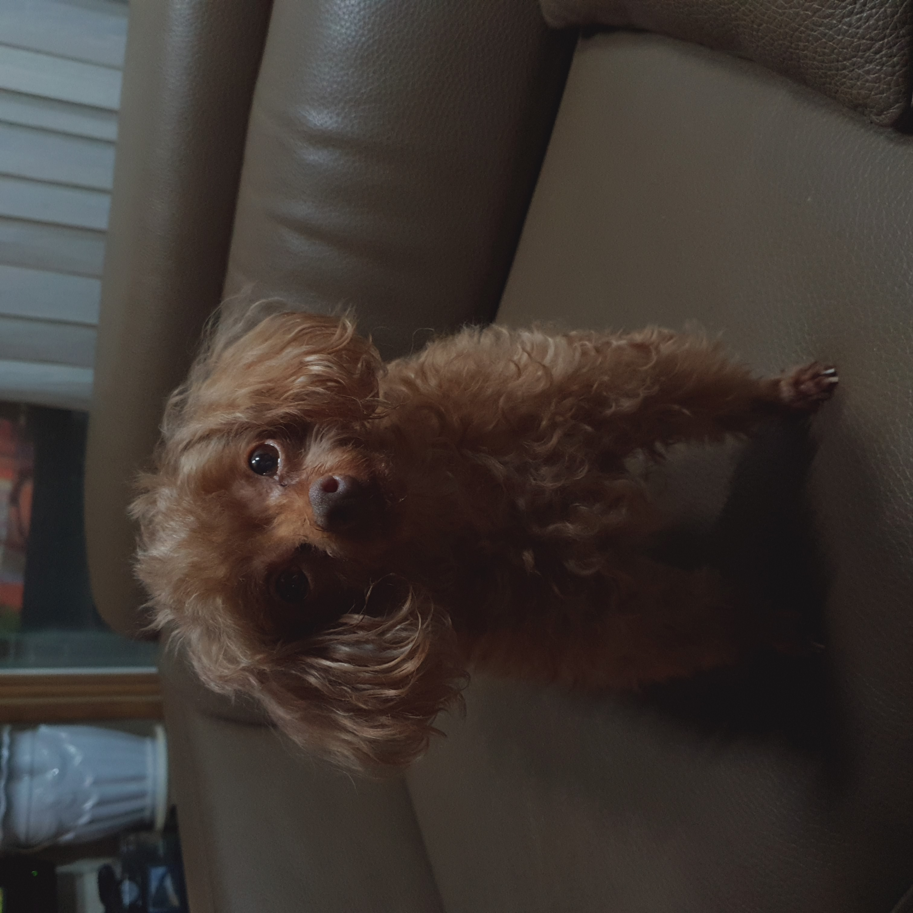

아모단의 브레인을 맡고 있다. 강아지 중에서도 영리한 강아지 종으로 알려져 있다. 우는 척을 해도 다 알아채는 등 아주 교활한 녀석이다.
처음 하늘's 하우스에 입성했을 때부터 아주 교활하고 주인을 이기려 매우 많은 시도를 했다. 결과적으로는 지금도 꽤 쏠쏠하게 주인을 속여 간식을 얻어내고 있다. 주인의 거짓 울음도 금방 알아채는 무서운 녀석이다.
그러나 그에게도 숙적이 있었으니, 바로 아모단의 막내 단풍이다. 단풍은 아지와의 첫 만남부터 싸대기를 날리는 등 아주 무례했다. 그 뒤로 아지는 단풍을 매우 싫어했지만, 끊임없는 단풍의 러브콜로 지금은 나름 사이가 좋다. 